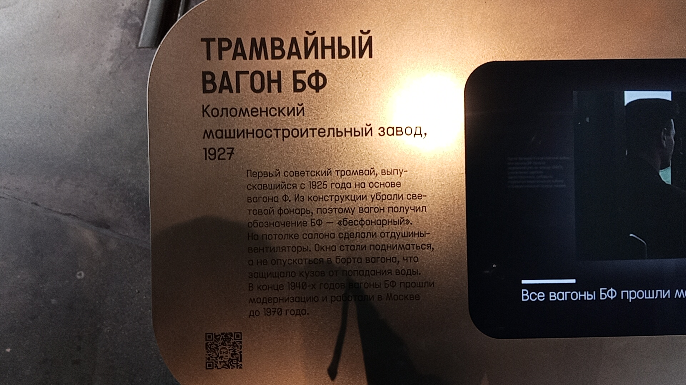

«Бесфонарный» (БФ)
БФ — «бесфонарный» трамвайный вагон, первый советский трамвай, выпускавшийся с 1925 по 1929 год. Название получил из-за отсутствия светового фонаря на крыше, характерного для более ранних вагонов типа Ф.
Это один из первых советских трамваев, с которого начиналась новая страница истории московского транспорта. Трамвай прослужил городу 60 лет. Из почти 400 выпущенных вагонов сохранились лишь два.
История вагона № 932
Хронология службы
| Город | Депо/Парк | № | С... | По... | Примечание |
|---|---|---|---|---|---|
| 🇷🇺 Москва | Музей Транспорта Москвы | 932 | 01.2022 | ||
| Коллекция исторических трамваев | 932/934 | 2001 | 01.2022 | ||
| Трамваи до 1994 года — прочее | 934 | 1988 | 2001 | ||
| Трамваи до 1994 года — межсоевые вагоны (1924-1941) | 932 | 1927 | 24.09.1965 | Буксир |
Паспортные данные
| Город: | Москва 🇷🇺 Россия |
| Депо/Парк: | Музей Транспорта Москвы |
| Модель: | БФ |
| Построен: | 1927 |
| Текущее состояние: | Не эксплуатируется |
| Назначение: | Музейный |
Двухосный моторный вагон на тележках типа «Беккер», построен на Коломенском заводе.
Первоначально эксплуатировался в депо имени Артамонова. Затем эксплуатировался в Краснопресненском депо до списания 24.09.1965.
С 1965 года до начала 80-х годов работал буксиром № 3424, первоначально на СВАРЗе, затем на ТРЗ.
В 1988 году восстановлен в депо имени П. Апакова как исторический экскурсионный вагон № 934.
В 2001 году вагону возвращён исторический № 932.
05.2023 — 07.2026: проходил реставрацию в фирме "ДИЗЭТ" (г. Иваново).
03.07.2026: перевезён из города Иваново на ТРЗ для пусконаладочных работ.
06.07.2026: перевезён в ТРЗ в экспозиционный комплекс Музея транспорта Москвы на Новорязанской улице, 27.
Фотогалерея

Отреставрированный БФ 1927 года из коллекции музея.

Табличка об экспонате. Вагон БФ № 932.
Нажмите на фото для увеличения
«БФ — значит бесфонарный. Это один из первых советских трамваев, с которого начиналась новая страница истории московского транспорта. И сегодня мы возвратили к жизни один из немногих сохранившихся свидетелей той эпохи».